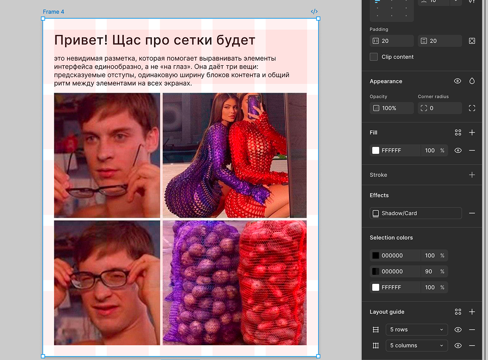
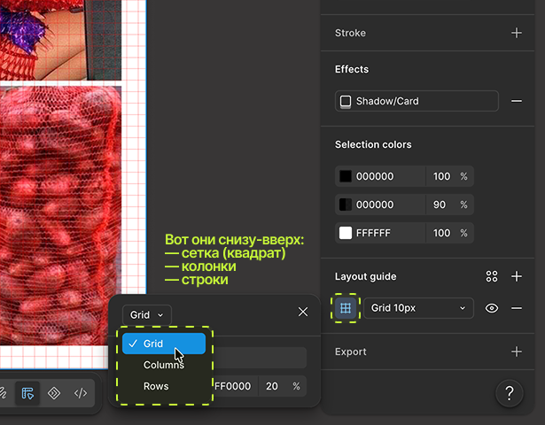
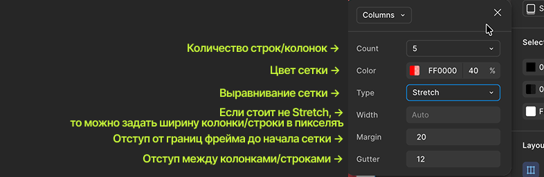
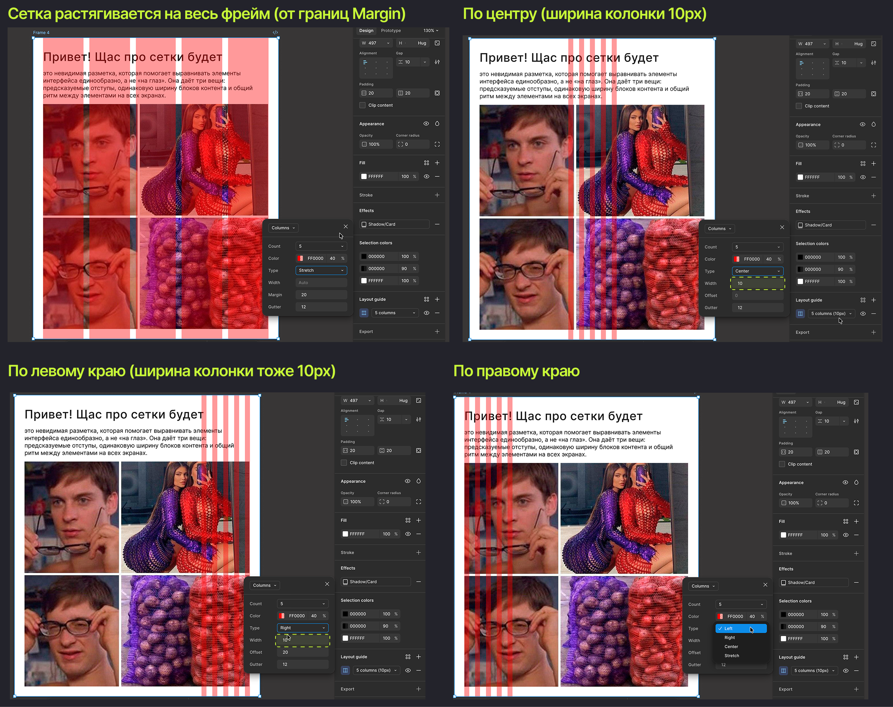
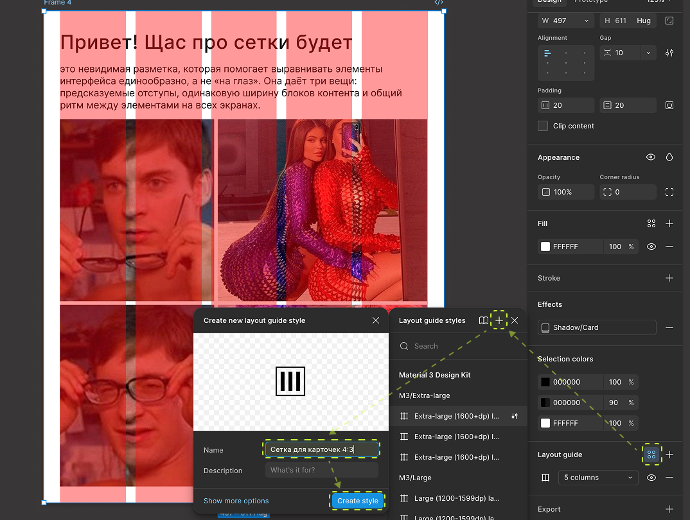

Если вы когда-нибудь смотрели на макет и не понимали, почему блок здесь, а не на 20 пикселей левее — скорее всего, дело в сетке, которую вы не видите. Сегодня учимся включать и настраивать сетку в Фигме и понимать, зачем дизайнеры вообще ей пользуются.
План урока
- Зачем нужна сетка
- Три типа сетки в Figma: Grid, Columns, Rows
- Настройка колонок: количество, отступы, поля
- Стандартные сетки: 12 колонок (десктоп), 8 (планшет), 4 (мобилка)
- Как сетка помогает в верстке текста
- Сохранение сетки в стиль
- Итог + домашнее задание
1. Зачем нужна сетка
Сетка (grid) — это невидимая разметка, которая помогает выравнивать элементы интерфейса единообразно, а не «на глаз». Она даёт три вещи: предсказуемые отступы, одинаковую ширину блоков контента и общий ритм между элементами на всех экранах. Для редактора сетка — это ещё и инструмент проверки: если текстовый блок «выбивается» из сетки, это повод спросить дизайнера, баг это или так и задумано.

2. Три типа сетки в Figma: Grid, Columns, Rows

У фрейма в блоке Layout Grid можно добавить один или несколько слоёв сетки трёх типов:
- Grid — равномерная сетка квадратных ячеек, задаётся размером ячейки (полезна для иконок, пиксель-выравнивания);
- Columns — вертикальные колонки, самый частый тип для вёрстки страниц;
- Rows — горизонтальные ряды, реже, но полезно для таблиц и списков.
Можно включить сразу несколько сеток одновременно и переключать их видимость по отдельности — например, Columns для общей вёрстки и Grid 8px для точной подгонки отступов.
3. Настройка колонок: количество, отступы, поля

У сетки Columns есть четыре ключевых параметра:
- Count — количество колонок;
- Gutter — расстояние между колонками;
- Margin — отступ от края фрейма до первой/последней колонки;
- Type — Stretch (сетка растягивается на весь фрейм), Left/Center/Right (фиксированная ширина, прижатая к краю или центру)

4. Стандартные сетки: 12 колонок (десктоп), 8 (планшет), 4 (мобилка)
Общепринятые (не обязательные, но распространённые) стандарты:
- Десктоп (~1440px) — 12 колонок, gutter 24px, margin 80–120px;
- Планшет (~768–834px) — 8 колонок, gutter 16–20px, margin 24–40px;
- Мобилка (~360–430px) — 4 колонки, gutter 8–16px, margin 16–20px.
Это не жёсткий закон, а отправная точка — конкретные цифры всегда берутся из дизайн-системы проекта, если она есть.
📎 Источник для сверки актуальных гайдлайнов: Material Design — Layout grid
5. Как сетка помогает в верстке текста
Для редактора сетка особенно полезна при работе с длинными текстами: ширина текстового блока, привязанная к N колонкам сетки, а не к произвольному числу пикселей, гарантирует, что строка не станет ни слишком длинной (плохая читаемость), ни слишком короткой. Комфортная длина строки для чтения — обычно 45–75 символов, и сетка помогает держаться в этом диапазоне не на глаз, а системно.
На картинках можно заметить что текста и картинка выровнена по левому краю сетки, такое же можно делать и со строчной сеткой (Rows), чтобы каждый блок был на своем месте. К этому мы еще вернемся в блоке с платной фигмой, где будет продвинутое прототипирование.
6. Сохранение сетки в стиль

Так же, как цвет и текст (см. урок 5), сетку можно сохранить как Grid style и переиспользовать на всех фреймах-экранах одного типа — например, Grid/Desktop/12col. Меняете margin в стиле — обновляются все экраны разом.
Итог урока
Сегодня разобрали, зачем нужна сетка, как настраивать колонки и ряды, и как сохранять сетку в переиспользуемый стиль. В следующем уроке — автолейаут, инструмент, который вместе с сеткой превращает вёрстку в конструктор из кубиков вместо ручной раскладки пикселей.
Домашнее задание:
- Создать фрейм 1440×1024, настроить сетку 12 колонок (gutter 24, margin 80).
- Разместить 2–3 текстовых блока строго по границам колонок.
- Сохранить сетку как стиль с именем через слэш.я
Полезные материалы
- Как работать с модульной сеткой в Figma (Skillbox)